| age | job | marital | education | default |
|---|---|---|---|---|
| 58 | management | married | tertiary | no |
| 44 | technician | single | secondary | no |
| 33 | entrepreneur | married | secondary | no |
| 47 | blue-collar | married | unknown | no |
| 33 | unknown | single | unknown | no |
| 35 | management | married | tertiary | no |
Predicting Customer Behavior Using a Portuguese Financial Institution Dataset
Abstract
Financial institutions spend billions of dollars on their marketing teams every year, with a positive trend observed in 2023 for the largest and smallest banks (Ally Akins (2024)). With the need for efficient marketing becoming more and more important, machine learning models are viable tools for refining marketing strategies. This project will seek to identify a model for predicting consumer financial behavior using a dataset from a Portuguese bank. Through comparing the accuracy and predictive power of four different machine learning models, this project will identify an ideal method for prediction.
Introduction
General Background Information
In 2022, JPMorgan Chase & Co. spent $3.9 billion (US) dollars on Marketing, leading other financial institutions in this category. Recent reports have shown that this has only grown in past years (Co. (2023)). Providing businesses with a model that will allow prioritization of consumers and/or demographics has great potential in improving resource management and future marketing campaigns, as well as increasing efficient spending. This particular project will utilize Classification Prediction. Unlike Regression Prediction which will attempt to predict a continuous value (e.g., x amount of dollars, x amount of cells), Classification Prediction seeks to train a model that can correctly predict a classification (e.g., True/False, Success/Failure) based on the given predictors(Kuhn (2018)). In our case, our y variable or response variable is a binary variable, Yes/No, answering whether or not a customer subscribed to a term deposit.
Description of data and data source
The data was donated on 2/13/2012. It was collected from phone call marketing campaigns performed by a Portuguese banking institution. I have accessed this data from the UC Irvine Machine Learning Repository.
There are 45,212 records, 17 columns/variables which include: age, marital status, job, education, details related to the phone call, as well as answers related to questions about past credit history. Additionally, as mentioned, the classification variable is whether or not the person subscribed to a term deposit.
Questions/Hypotheses to be addressed
The research question I plan to address with my analysis is: which features or combination of features are the best predictors of consumers making a deposit? The desired output of this analysis is a model which allows a financial institution to make better decisions regarding future marketing campaigns. I plan to investigate all demographic variables, with a specific focus on job type, education and age.
Methods
Data aquisition
The dataset for this project was retrieved from UCI ML Repository in CSV form. Additionally, I created a codebook based on data from the same source.
Data import and cleaning
Reading in the Data
| balance | housing | loan | contact | day |
|---|---|---|---|---|
| 2143 | yes | no | unknown | 5 |
| 29 | yes | no | unknown | 5 |
| 2 | yes | yes | unknown | 5 |
| 1506 | yes | no | unknown | 5 |
| 1 | no | no | unknown | 5 |
| 231 | yes | no | unknown | 5 |
Dimensions:
Rows: 45, 211
Columns: 17
Describing data
| x |
|---|
| 'data.frame': 45211 obs. of 12 variables: |
| $ age : int 58 44 33 47 33 35 28 42 58 43 ... |
| $ job : Factor w/ 12 levels "admin.","blue-collar",..: 5 10 3 2 12 5 5 3 6 10 ... |
| $ marital : Factor w/ 3 levels "divorced","married",..: 2 3 2 2 3 2 3 1 2 3 ... |
| $ education : Factor w/ 4 levels "primary","secondary",..: 3 2 2 4 4 3 3 3 1 2 ... |
| $ default : Factor w/ 2 levels "no","yes": 1 1 1 1 1 1 1 2 1 1 ... |
| $ balance : int 2143 29 2 1506 1 231 447 2 121 593 ... |
| $ housing : Factor w/ 2 levels "no","yes": 2 2 2 2 1 2 2 2 2 2 ... |
| $ loan : Factor w/ 2 levels "no","yes": 1 1 2 1 1 1 2 1 1 1 ... |
| $ contact : Factor w/ 3 levels "cellular","telephone",..: 3 3 3 3 3 3 3 3 3 3 ... |
| $ day : Factor w/ 31 levels "1","2","3","4",..: 5 5 5 5 5 5 5 5 5 5 ... |
| $ month : Factor w/ 12 levels "apr","aug","dec",..: 9 9 9 9 9 9 9 9 9 9 ... |
| $ y_termSubscribed: Factor w/ 2 levels "0","1": 1 1 1 1 1 1 1 1 1 1 ... |
Cleaning Data
There were several different data cleaning methods that were experimented with in order to find the best way to prepare the data for modeling. First, I converted several variables to factors, as they had been read in as character variables, or strings. Next I tried to use the DummyVars tool to convert every categorical variable to a dummy value but this made modeling difficult due to a large amount of binary variables. Instead I proceeded with converting the categorical variables to numeric values while maintaining their factor status. I also created a dataset with these numeric values that were not factors. These were the two primary dataset I used for my modeling. Finally I created a dataset stripping the categorical values of their attributes, this was solely created to allow for my corrplot to work.
Removing Initial Predictors
I removed the ‘Duration’ variable due to a warning I discovered on the site hosting this dataset initially: “Important note: this attribute highly affects the output target (e.g., if duration=0 then y=‘no’). Yet, the duration is not known before a call is performed. Also, after the end of the call y is obviously known. Thus, this input should only be included for benchmark purposes and should be discarded if the intention is to have a realistic predictive model.”(Moro & Cortez (2012)) Due to this new information I decided to remove all the variables related to this, which included ‘campaign’, ‘pdays’, ‘previous’, and ‘poutcome.’ Bringing our new total number of predictors to 11.
Results
Exploratory Data Analysis
Peng and Matsui define EDA as “the process of exploring your data”, “[including] examining the structure and components of your dataset, the distributions of individual variables, and the relationships between two or more variables”(Peng & Matsui (2018)).
In accordance with this definition, we will be exploring the data using different charts to identify outliers, abnormalities, relationships, and the general shape and feel of different variables.
Figure 1 shows the distribution of the ‘Age’ variable.
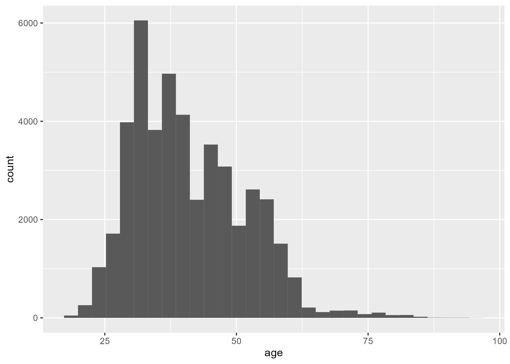
While this shows a slight skew to the right, if we account for the extreme values, this data seems to be fairly normally distributed.
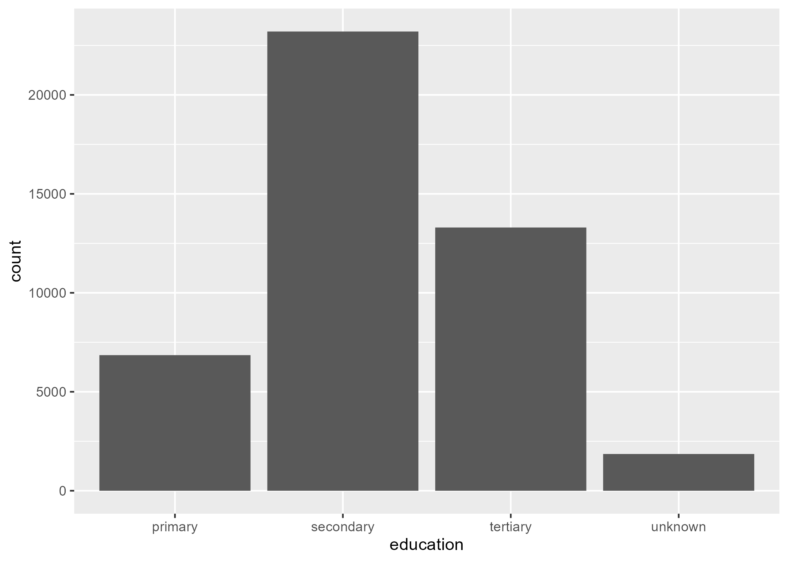
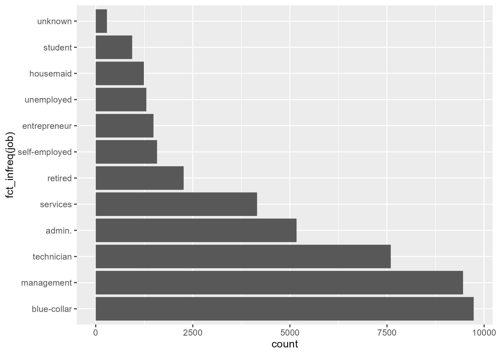
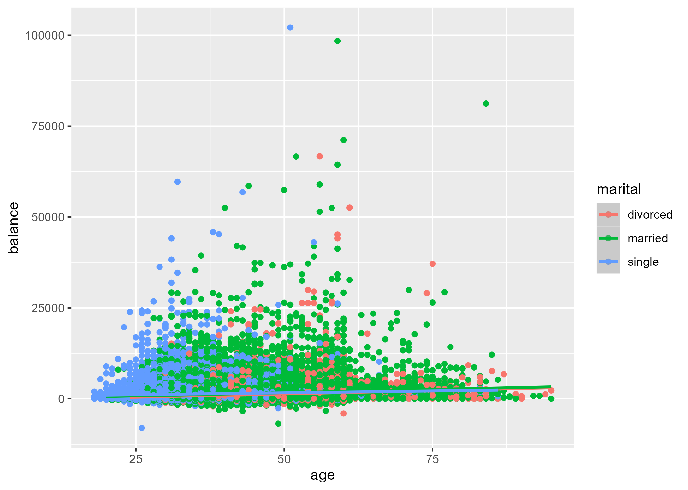
Figure 5 shows a barplot of the most common days of the month to record a positive outcome.
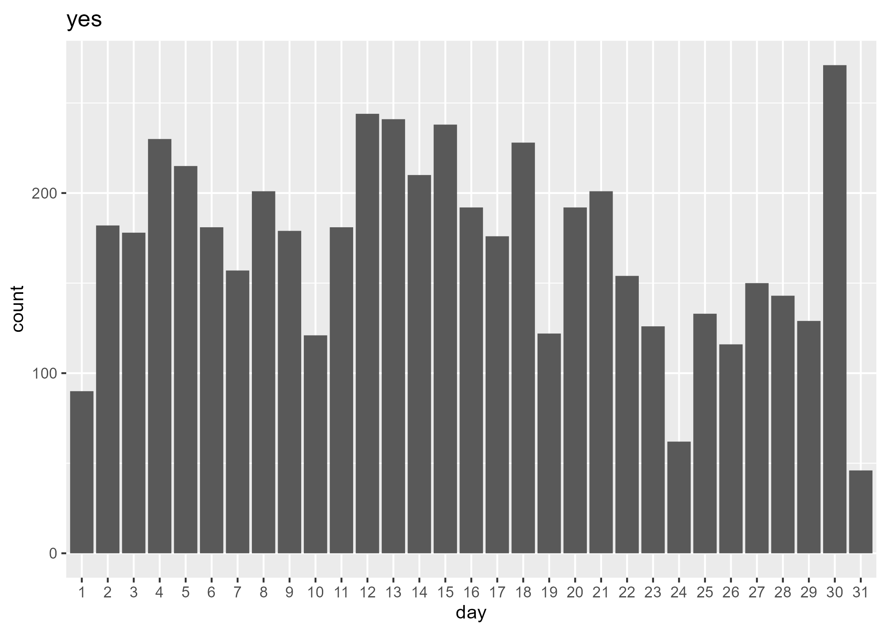
While there doesn’t appear to be a significant trend, we can clearly see that the 30th of the month stands out as being a day of interest, especially compared to other days of the months.
Figure 6 shows potential correlation between different variables.
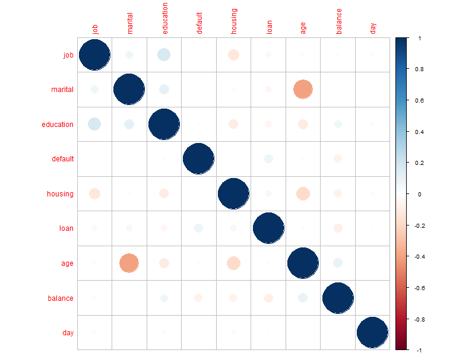
The biggest takeaways from our Exploratory Data Analysis is that most variables are fairly normally distributed due to the size of the data, and most variable are not correlated to each other, with one exception (‘Age’ and ‘Marital’).
Basic statistical analysis
Before I began with the machine learning analysis, I sought to test the variables of interest in their significance of affecting the response variable. As mentioned previously, our response variable is a binary value (Yes/No), which means that we need to use a logistic regression model instead of a linear regression model (Kuhn (2018)).
Below are the results of the logistic model fit with all variables as predictors
| term | estimate | std.error | statistic | p.value |
|---|---|---|---|---|
| (Intercept) | -0.8090128 | 0.2095208 | -3.861252 | 0.0001128 |
| job | 0.0133597 | 0.0046908 | 2.848042 | 0.0043989 |
| marital | 0.2328452 | 0.0276199 | 8.430357 | 0.0000000 |
| education | 0.1858218 | 0.0198575 | 9.357763 | 0.0000000 |
| default | -0.4935394 | 0.1456864 | -3.387684 | 0.0007049 |
| housing | -0.7963802 | 0.0313995 | -25.362860 | 0.0000000 |
| loan | -0.5843431 | 0.0502504 | -11.628624 | 0.0000000 |
| age | 0.0062746 | 0.0015087 | 4.158970 | 0.0000320 |
| balance | 0.0000238 | 0.0000039 | 6.057946 | 0.0000000 |
| day | -0.0119537 | 0.0017711 | -6.749262 | 0.0000000 |
As expected, all predictors are very significant as determined by the very small p-values. We will proceed to the Machine Learning portion of this project.
Machine Learning Modeling
I chose to utilize the following models: the Multivariate Adaptive Regression Splines model (MARS), K-Nearest Neighbors model (KNN), Logistic Regression model, and RandomForest models to determine the best prediction model for this project.
Background on Chosen Models
MARS:
The MARS model has some similarities to both Neural Networks and the Partial Least Squares model, but the distinguishing feature is a use of multiple ‘splines’ to create a “piecewise linear model” with multiple features modeling a separate part of the data (Kuhn (2018)).
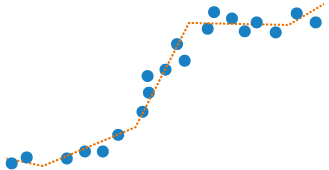
KNN:
The KNN model predicts based on the closest samples or neighbors. Essentially, to predict a value, the data is broken up into samples/neighbors, and then the nearest samples (using Euclidean distance, typically) to the value of interest are examined to either classify or find a mean between the chosen samples. K represents the number of neighbors to utilize to come to this conclusion (Kuhn (2018)).
Logistic Regression:
As mentioned earlier, Logistic Regression is similar to Linear Regression but the difference is that a Logistic Regression focuses on the probability of an event (p, p-1).
RandomForest:
RandomForest models take advantage of decision trees. If we think about the scenario in our project (whether someone makes a deposit or not), we could imagine a decsion tree starting with, “after what age is someone more likely to subscribe?” This would be our first node to split the data on. We could continue asking things like, “Are those with housing loans more likely to subscribe?” or “Are those who are married more liklely to subscribe?”, and these would represent more decision nodes for us to split the data on, getting us closer to the mode accurate prediction model. The RandomForest algorithm uses different methods to create several uncorrelated “forests” of decision trees (IBM (n.d.)) .
Background On Performance Metrics
Description of Key Metrics:
Accuracy:
The proportion of total correct classifications.
Recall: (Sensitivity)
The proportion of Positive cases that were correctly identified. This helps us understand how well we can classify positive cases specifically.
Specificity:
The proportion of Negative cases that were correctly identified. Precision:
The proportion of Positive classifications that were actually correct.
F1:
The harmonic mean of Precision and Recall. This metric helps iron out extreme values
ROC:
The Receiver Operator Characteristic is a plotting technique that shows the threshold difference between Sensitivity (Recall) and Specificity. A model with good performance will have curve closer to the top left of the graph, whereas, a low-performing model will have a curve closer to the middle diagonal line.
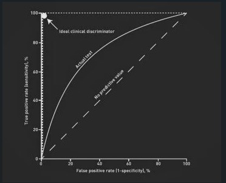
Model Performance Metrics
As highlighted in the data cleaning section, there were two data sets I was focusing on: one that had numeric factors for the categorical predictors, and one that had just numeric variables for the categorical predictors. I decided to examine both so there are a total of 8 different runs recorded below, 4 runs for each dataset.
Table 3 displays the relevant metrics for the models runs using the predictors that are numeric and are not factors.
| Term | MARS | KNN | LogReg | RF |
|---|---|---|---|---|
| accuracy | 0.882 | 0.88 | 0.882 | 0.887 |
| kappa | 0.017 | 0.018 | 0 | 0.126 |
| sensitivity | 0.011 | 0.014 | 1 | 0.084 |
| specificity | 0.999 | 0.997 | 0 | 0.994 |
| precision | 0.545 | 0.357 | 0.882 | 0.667 |
| recall | 0.011 | 0.014 | 1 | 0.084 |
| f1 | 0.022 | 0.027 | 0.937 | 0.149 |
While all four models performed fairly similarly, the RandomForest model reported the highest values in all major categories. What stands out very clearly is that while all models have a fairly high accuracy scores, they also have very low recall values. We can deduce that this means the models are great at predicting negative cases (no subscription) but not very adequate at predicting positive cases (subscription). In the case of the Logistic Regression Model, there were 0 positive cases predicted at all, and thus the non-accuracy scores were 0 or NA.
Table 4 displays the relevant metrics for the models using the predictors that are factors (Age/Balance are still numeric).
| Term1 | MARS1 | KNN1 | LogReg1 | RF1 |
|---|---|---|---|---|
| accuracy | 0.882 | 0.882 | 0.881 | 0.884 |
| kappa | 0 | 0.031 | 0 | 0.144 |
| sensitivity | 0 | 0.021 | 0.001 | 0.105 |
| specificity | 1 | 0.997 | 0.999 | 0.989 |
| precision | NA | 0.524 | 0.125 | 0.554 |
| recall | 0 | 0.021 | 0.001 | 0.105 |
| f1 | NA | 0.04 | 0.002 | 0.176 |
With these results we can see that the RandomForest Model is still the best performing, but in this case, the KNN model is not too far behind in most metrics. The Logistic Regression model performed better under these conditions, predicting some positive classes. However, the MARS model did not fare so well. In this run, the MARS model was the model to not identify a single positive class.
Figure 9 displays the ROC Curve for the first model run. Both ROC charts were identical, so only one is included here.
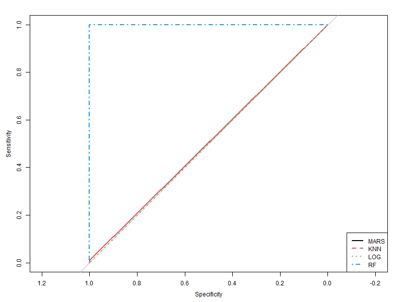
The ROC graph tells an even clearer story. While the RF model had a near perfect threshold trade-off between Sensitivity and Specificity, the other three models had very low ROC scores, again emphasizing poor predictive performance.
Variables of Importance
Finally, we can examine which predictors specifically improved prediction the most. That is, which had the greatest weight on the final result. We will compare the difference between the two different runs of the same models. I determined it would only be helpful to include models that had more an 0 positive classes predicted.
Figure 10 shows the Predictors that had the most impact on the Mars Model – Numeric
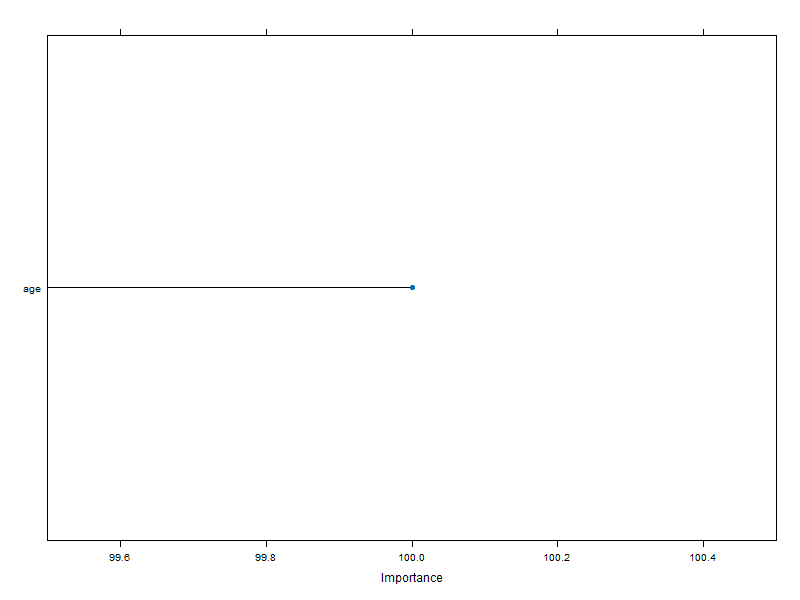
The numeric MARS models only highlighted a single variable of importance: Age.
Figure 11 shows the Predictors that had the most impact on the KNN Model–Numeric
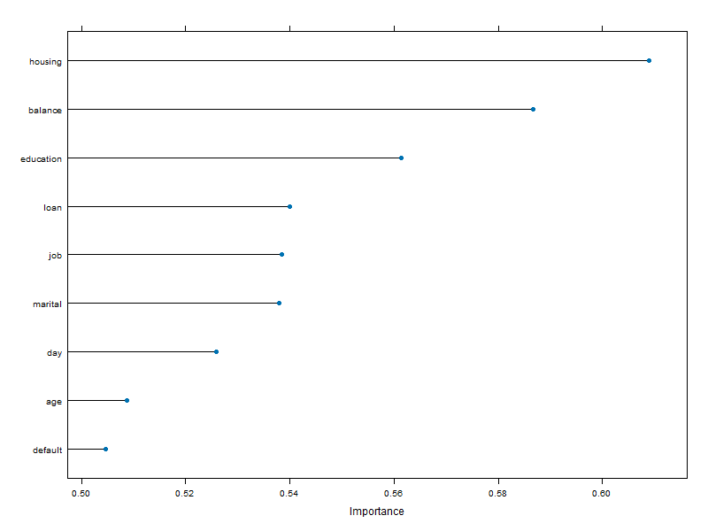
Both KNN model runs returned the exact same most important factors, which were: Housing (whether someone had a housing loan or not), Balance (numeric value representing the customer’s current account balance), and Education (Secondary, Tertiary, etc.).
Figure 12 shows the Predictors that had the most impact on the Logistic Regression Model – Factor
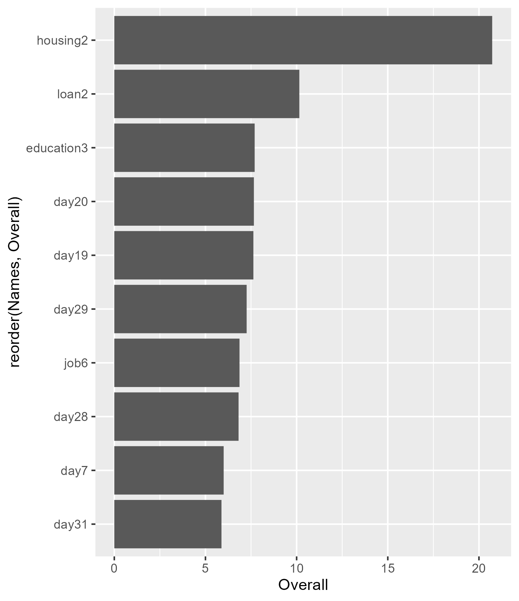
Housing2 indicates that the person does have a housing loan and Loan2 indicates that the person has personal loan. Education3 indicates that the person has attained a tertiary level of education. Additionally we see different days being flagged as important in determining accuracy.
Figure 13 shows the Predictors that had the most impact on the RF Model – Numeric
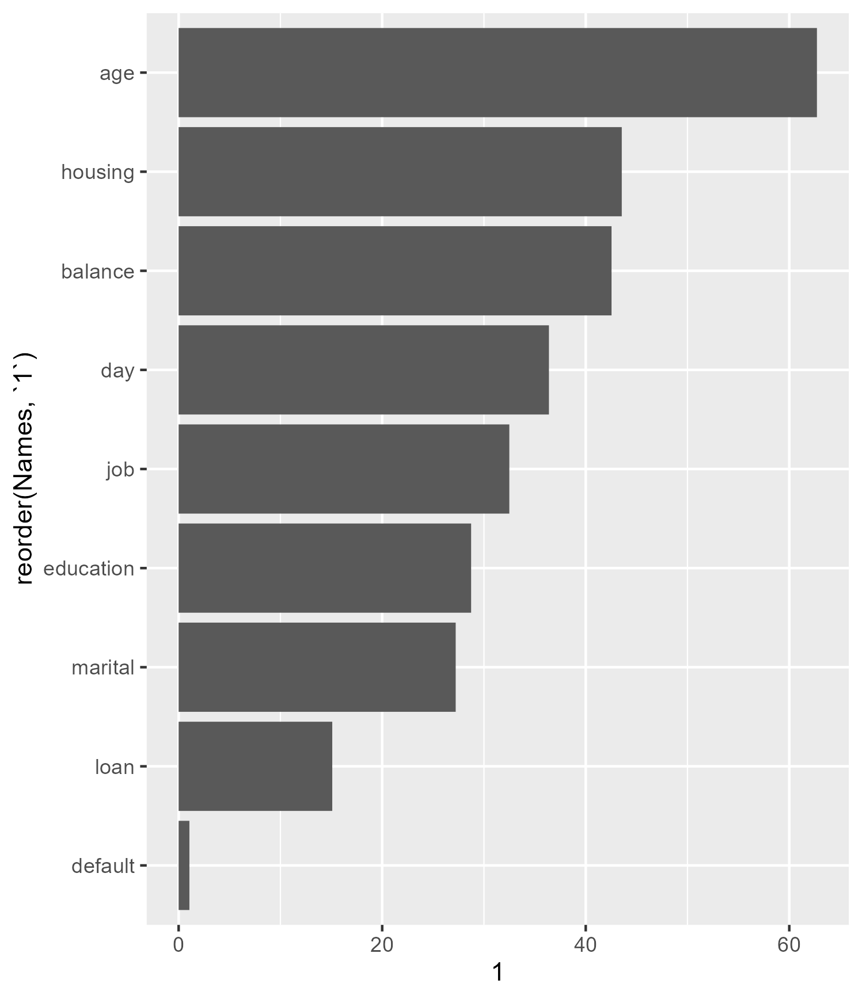
Figure 14 shows the Predictors that had the most impact on the RF Model – Factor
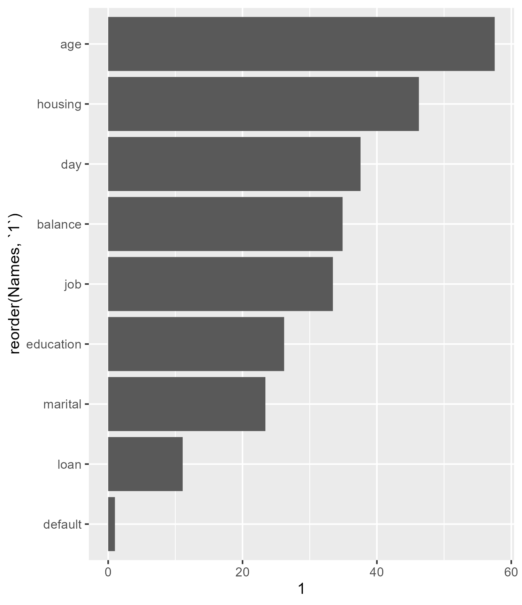
For both RandomForest models, Age and Housing were the variables with most impact on the model’s prediction power. Balance and Day were next for both models in different order of importance.
DownSampling Machine Learning Models
In situations involving imbalanced response variables, there are different approaches available that can improve model performance. Kuhn and Johnson describe several different options including “Up-sampling” and “Down-sampling” (Kuhn (2018)). Up-sampling involves generating additional synthetic data in order to bring the totals of the response classes up to an equal amount. Down-sampling involves removing random observations until the the majority class is equal to the minority class (or classes). Since this project was already utilizing a fairly large dataset, I decided to perform Down-sampling in order to assist with the response variable imbalance that was being observed. The challenge with this approach is that there is less data to train with, but could lead to a greater overall model performance.
I performed Down-Sampling on the training data set but kept the test data set intact as it was. It is recommended to allow the test data set to continue representing the natural data distribution in order for the most realistic prediction analysis
DownSampling Model Performance Metrics (Non-factored)
| Term | MARS | KNN | LogReg | RF |
|---|---|---|---|---|
| accuracy | 0.648 | 0.629 | 0.624 | 0.676 |
| kappa | 0.137 | 0.106 | 0.113 | 0.168 |
| sensitivity | 0.615 | 0.574 | 0.626 | 0.629 |
| specificity | 0.652 | 0.637 | 0.602 | 0.683 |
| precision | 0.192 | 0.175 | 0.921 | 0.21 |
| recall | 0.615 | 0.574 | 0.626 | 0.629 |
| f1 | 0.293 | 0.269 | 0.746 | 0.315 |
At first glance, it appears that the performance power on these models is less than the first models, but this is not the case. While Accuracy was lower among all models, Recall and F1 scores saw tremendous improvements. The model that improved the most was clearly Logistic Regression which didn’t show any Precision or F1 power initially, but now shows better Precision and F1 than the RandomForest model, which still showed to the be the superior model after this run.
DownSampling Model Performance Metrics (Factored)
| Term1 | MARS1 | KNN1 | LogReg1 | RF1 |
|---|---|---|---|---|
| accuracy | 0.65 | 0.618 | 0.647 | 0.61 |
| kappa | 0.136 | 0.123 | 0.135 | 0.13 |
| sensitivity | 0.61 | 0.642 | 0.612 | 0.677 |
| specificity | 0.655 | 0.615 | 0.652 | 0.602 |
| precision | 0.192 | 0.183 | 0.191 | 0.186 |
| recall | 0.61 | 0.642 | 0.612 | 0.677 |
| f1 | 0.292 | 0.285 | 0.291 | 0.292 |
We can observe similar changes in the second Down-sampled run. In the Factored-Down-Sampled model runs, we also see that it is harder to identify a single model of best performance. The MARS model showed the best Accuracy and Specificity, while the RandomForest model showed the best Sensitivity and Precision. The Logistic Regression model was not far behind in these categories and managed to approximately tie three ways for the F1 metric, along with the MARS Model and RandomForest Model.
Table 5 displays the ROC Curve for the Down-Sampled model runs. Again, both ROC charts were identical, so only one is included here.
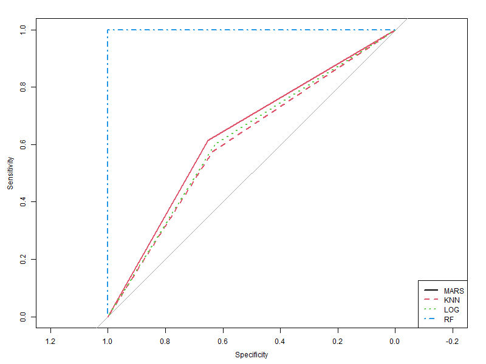
We can see much better results on the ROC model compared to the first runs. The RandomForest again performs nearly perfectly, but all three remaining models show some promise in terms of threshold trade-off, with the MARS model leading these three.
Variables of Importance for Down-Sampled Models
Figure 15 shows the Predictors that had the most impact on the Down-Sampled Mars Model – Factored
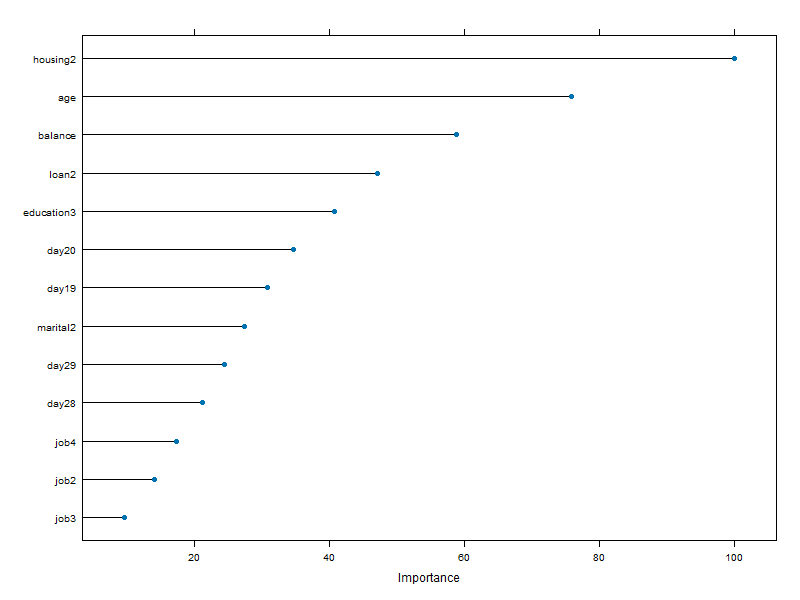
Both MARS models highlighted essentially the same variables of importance, with added detail coming from the factored model. As mentioned previously, Housing2 indicates that the person does have a housing loan and Loan2 indicates that the person has personal loan. Education3 indicates that the person has attained a tertiary level of education. Marital 2 indicates the person is married.
Figure 16 shows the Predictors that had the most impact on the Down-Sampled KNN Models (both models highlighted the same variables)
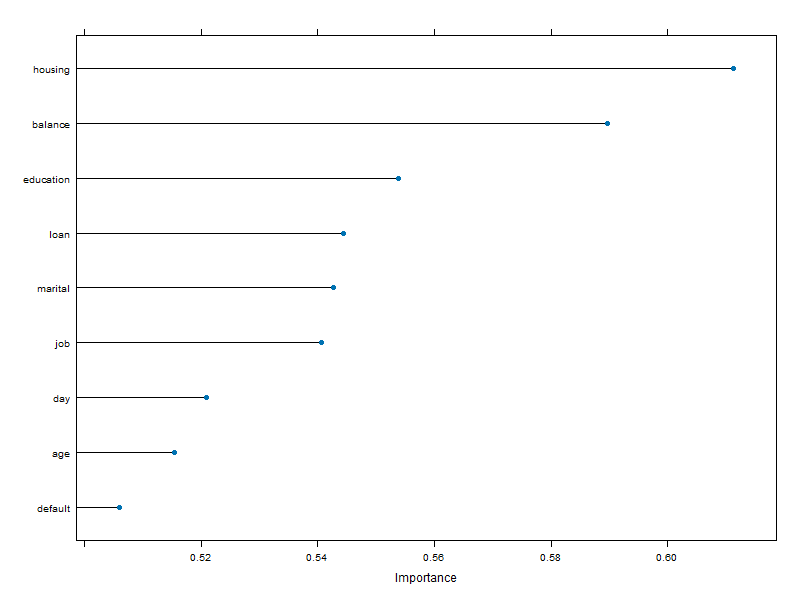
The variables highlighted here are the same that were highlighted in the original KNN models with the only exception being the Marital variable moved up one spot on this list.
Figure 17 shows the Predictors that had the most impact on the Down-Sampled Logistic Regression Model – Factored
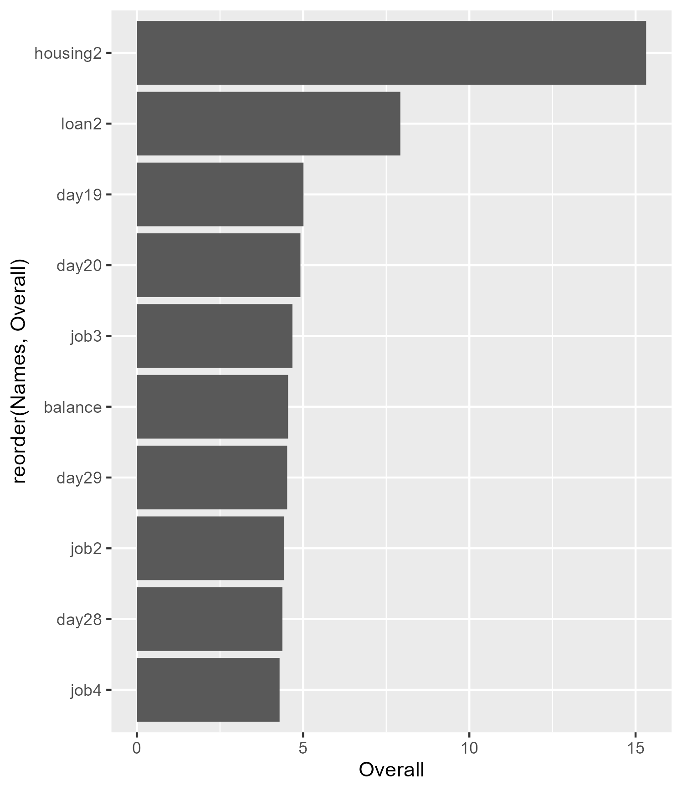
These are practically the same variables highlighted in the original Logistic Regression Model, except while the ‘Education3’ variable was the third most important variable on the original model, it is nowhere to be found on this new list. In contrast, the ‘Job3’ (Technician) variable makes an appearance as having a substantial impact on prediction power.
Figure 18 shows the Predictors that had the most impact on the Down-Sampled Logistic Regression Model – Factored
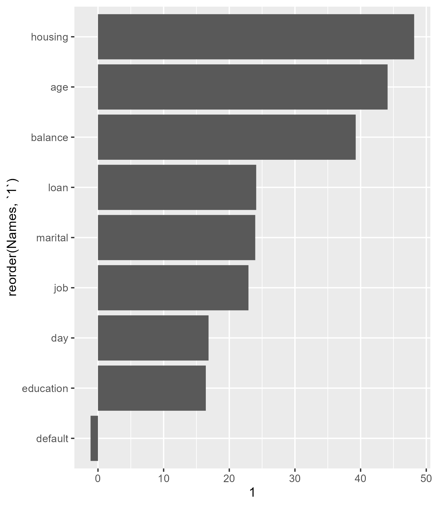
While the two Down-Sampled models were fairly close in highlighting variables, there was quite a bit of difference between these results and the original RandomForest model. Where the original highlighted, Age, Housing, Day and Balance, the new models highlighted Housing, Age, Balance, and Loan.
Discussion
Summary and Interpretation
Initially the metrics produced by these models were showing substantial promise, but as I investigated the different confusion matrices I realized that the metrics were incorrectly labeling the negative classification as positive. When I reversed this option, the metrics very clearly shows that there was a drop in performance for predicting positive classifications. One explanation for this is that there were too few positive classes in the data as a whole. In the full data set, about 11% of the observations were positive cases, and this was also the case in the test data set as well. Given the size of the data set (45K records), and the small proportion of positive cases, there is reason to conclude that the models were victim to lack of familiarity with the positive cases.
Using a Down-Sampling approach to alleviate the imbalance issue resulted in models with greater predictive power and gave more clarity on which variables (and in some cases, sub-variables) contributed the most towards correctly predicting the response variable.
All four models provided insights for this objective. The Housing variable was listed as the most important variable by every model with the exception of the Mars-Numeric model. Balance and Age were also listed as important by several different models. The variables that did not show up in the five important variables in any of the models were: Marital, Job, and Default. Education, Loan, and Day had a significant effect on some of the models and little to no effect on others.
Conclusions
Using machine learning to better define a customer base can be an incredibly effective way to create more efficient marketing campaigns, as well as provide direction for better management of marketing resources.
I attempted to develop a classification model that accurately predicted whether a customer had subscribed to a term deposit or not. While the different models that were ran initially showed potential, the predictive power of the best model was not at an ideal level. With a more balanced data set with similar variables, it is probable that a more precise model could have been produced.
The other goal of this project was to identify which variables could best aid in identifying customers that would subscribe to a term deposit. I found that there was quite a bit of variance among the predictors in terms of importance, with some predictors clearly standing out above the rest. This information could be used to better segment a consumer pool or adjust marketing tactics to prioritize customers displaying the variables of importance uncovered in this project.
Further research would include utilizing additional models to confirm the results presented here, incorporating a more balanced data set (as mentioned above), and exploring different tuning options than were used in this project.
References
Ally Akins, C. H. &. T. F. (2024). What Bang Do Financial Marketers Get for Their Bucks?
Co., J. C. &. (2023). Creating Possibility Annual Report 2022.
IBM. (n.d.). What is random forest?
Kuhn, &. J., M. (2018). Applied predictive modeling.
Moro, R., S., & Cortez, P. (2012). Bank Marketing.
Peng, R. D., & Matsui, E. (2018). The Art of Data Science.